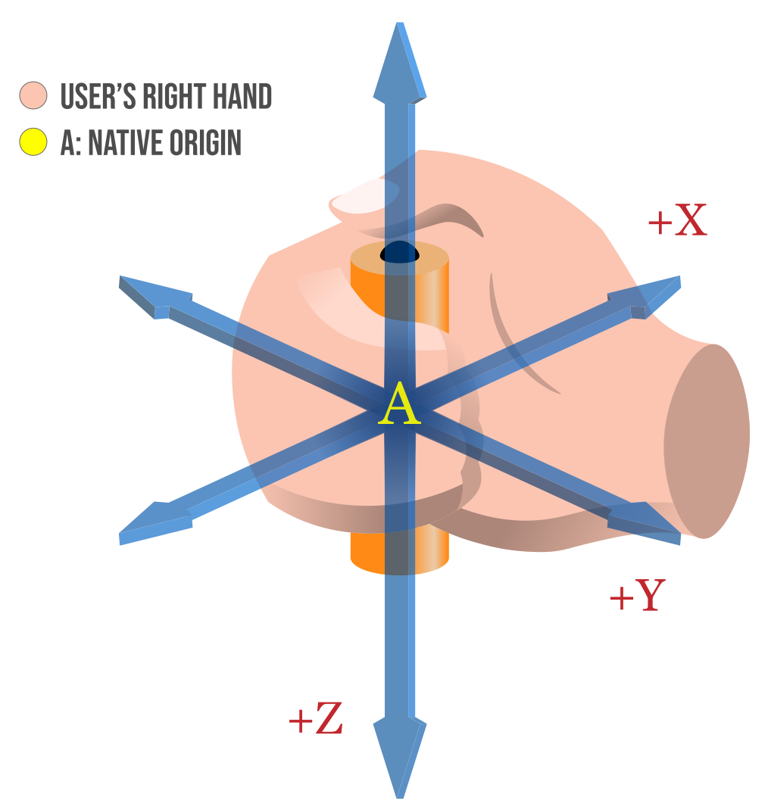

The WebXR Device API's XRInputSource interface describes a single source of control input which is part of the user's WebXR-compatible virtual or augmented reality system. The device is specific to the platform being used, but provides the direction in which it is being aimed and optionally may generate events if the user triggers performs actions using the device.
A {{domxref("Gamepad")}} object describing the state of the buttons and axes on the XR input source, if it is a gamepad or comparable device. If the device isn't a gamepad-like device, this property's value is NULL.
XRInputSource uses the {{domxref("Gamepad")}} interface from the Gamepad API, this input device is strictly associated with the WebXR hardware and is not a general-purpose gaming device.handedness. The orientation of this space indicates the angle at which the hand is gripping the object. Read on in the main article on {{domxref("XRInputSource.gripSpace", "gripSpace")}} for more details on how to use this space.XRInputSource is being used in, if any. The value will be left, right, or none.DOMString objects, each specifying the name of an input profile describing the preferred visual representation and behavior of this input source.A DOMString indicating the methodology used to produce the target ray: gaze, tracked-pointer, or screen.
targetRayMode.The XRInputSource interface defines no methods.
If the device provides an indication of the direction in which it is pointed, this is done using a target ray. This is a ray extending from the position of the device outward in the direction in which it is pointed.
A target ray emitted by a hand controller.
If the device includes a trigger or other squeezable input, such as a hand gesture device that recognizes when the user squeezes their fist, that action is called a primary squeeze action. A primary squeeze action should correspond to a gripping act in reality, such as taking hold of an object or pressing a trigger on a tool or weapon. When a squeeze action begins, such as by the user pressing the trigger or tightening their grip, a {{domxref("XRSession.squeezestart_event", "squeezestart")}} event is sent to the XRSession. Once the action is completed and the user has released the trigger or the grip, a {{domxref("XRSession.squeeze_event", "squeeze")}} event is sent. This is followed by a {{domxref("XRSession.squeezeend_event", "squeezeend")}}, which is also sent if the action is aborted rather than completed.
If the device has a button or other pressable input control, it is a primary input source, and this button is a primary action. A primary action may occur when the user presses a button, clicks on a touchpad or the top button of a thumb stick, or uses a hand gesture or spoken command that invokes the button-like action. When a primary action begins, a {{domxref("XRSession.selectstart_event", "selectstart")}} event is sent to the {{domxref("XRSession")}}. When the action has completed (such as when the user releases the button), a {{domxref("XRSession.select_event", "select")}} event is sent. Finally, once that is done—or if the user aborts the action—a {{domxref("XRSession.selectend_event", "selectend")}} event is sent to the session object.
An action may be aborted either by the user in some device-specific fashion or if the input device is disconnected before the action is completed.
Each input source has its own local coordinate system, which is described by the {{domxref("XRInputSource.gripSpace", "gripSpace")}} property, which is an {{domxref("XRSpace")}} used to map the input's coordinate system into the world coordinate system. The grip space's coordinate system can then be used to render objects so they appear to be held in the user's hand.

For more details on the input source's coordinate system, see the article that covers the {{domxref("XRInputSource.gripSpace", "gripSpace")}} property in detail.
{{Compat}}